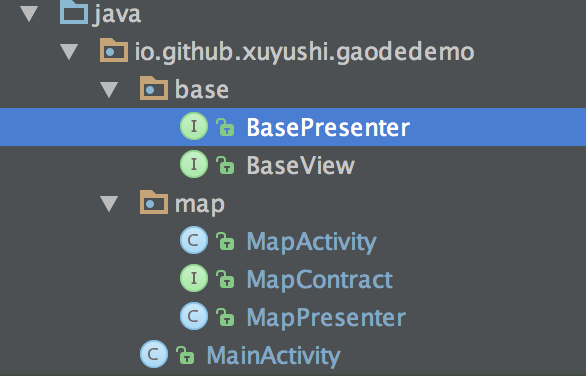

最近在做一个地图区域绘制的一个需求，如下
- 在地图区域内戳点绘制范围
- 在点击初始点连成区域
- 绘制过程中可撤销，绘点过程中有提示文案展示
......
结合最近学习的 MVP 模式做了一个 demo

项目结构

- MainActivity 是初始化界面，没有逻辑，直接跳转到地图页面
- 在 base 中定义了 BasePresenter 和 BaseView
- MapContract 定义了 MVP 中 V 和 P 的接口
- MapActivity 为 View 的具体实现
- MapPresenter 为 P 的具体实现
base
public interface BasePresenter {
void start();
}
public interface BaseView<T> {
void setPresenter(T presenter);
}
View 和 Presenter 是互相持有的，在 baseVIew 中定义了setPresenter方法
BasePresenter 中的start方法通常是在 activity 或者 fragment 的 resume onstart中调用，来做一些数据和 view 的初始化
P 和 V 是如何关联上的
- 在 MapActivity 中新建了一个 Presenter
new MapPresenter(this);
- MapPresenter的构造函数中
public MapPresenter(@NonNull MapContract.View mMapView) {
this.mMapView = mMapView;
mMapView.setPresenter(this);
}
将 Presenter 中持有的 view 赋值，并调用 View 中的 setPresenter 方法，次方法中将 VIew 中持有的 Presenter 赋值
由此 P 和 V 关联起来了
如何运作
当收到用户的操作时，会触发 View 的一系列监听事件，这些事件的处理中并不会直接调用 Model 层的方法，而是调用 Presenter 来处理，P中持有 Moudle 和 View，P层修改Moudle ，并将结构反应到 View 上。Presenter 对 view 的修改也不是直接修改空间，而是只有一个 view 接口，通过这个接口来实现对 view 的操作
code
关联层（Presenter 和 view 的接口定义）
/**
* Created by xuyushi on 16/4/22.
*/
public interface MapContract {
interface View extends BaseView<Presenter> {
Marker showFirstMarker(LatLng latLng);
Marker showMarker(LatLng latLng);
void removeMarker(Marker marker);
Polyline showPolyline(LatLng latLngA, LatLng latLngB);
void removePolyline(Polyline polyline);
Polygon showPolygon(Iterable<LatLng> latLngs);
void removePolygon(Polygon polygon);
void editPolygon(Polygon polygon, Iterable<LatLng> latLngs);
void showTipView(String mesg);
}
interface Presenter extends BasePresenter {
int MODE_TOUCH_POINT = 0;
int MODE_EDIT_POYGON = 1;
int getDrawMode();
void undo();
void drawLineAndShowMarker(LatLng latLng);
void showPolygon();
void removeAllPolyline();
void updatePolygon(Marker marker);
boolean isFirstMarker(Marker marker);
}
}
Mainactivity
public class MapActivity extends AppCompatActivity implements MapContract.View{
public static final String TAG = "MapActivity";
MapContract.Presenter mMapPresenter;
private MapView mapView;
private AMap aMap;
private TextView tips;
@Override
protected void onCreate(Bundle savedInstanceState) {
super.onCreate(savedInstanceState);
setContentView(R.layout.basicmap_activity);
mapView = (MapView) findViewById(R.id.map);
mapView.onCreate(savedInstanceState);// 此方法必须重写
tips = (TextView) findViewById(R.id.tv_tips);
new MapPresenter(this);
init();
initTouchEvent();
}
private void initTouchEvent() {
//地图触摸事件
aMap.setOnMapClickListener(new AMap.OnMapClickListener() {
@Override
public void onMapClick(LatLng latLng) {
if (mMapPresenter.getDrawMode() == MapPresenter.MODE_TOUCH_POINT){
mMapPresenter.drawLineAndShowMarker(latLng);
}
}
});
//Marker 点击事件
aMap.setOnMarkerClickListener(new AMap.OnMarkerClickListener() {
@Override
public boolean onMarkerClick(Marker marker) {
if (mMapPresenter.isFirstMarker(marker)) {
//画多边形
mMapPresenter.removeAllPolyline();
mMapPresenter.showPolygon();
Log.e(TAG, "is first marker: ");
}
return false;
}
});
//Marker 拖动
aMap.setOnMarkerDragListener(new AMap.OnMarkerDragListener() {
@Override
public void onMarkerDragStart(Marker marker) {
}
@Override
public void onMarkerDrag(Marker marker) {
mMapPresenter.updatePolygon(marker);
}
@Override
public void onMarkerDragEnd(Marker marker) {
mMapPresenter.updatePolygon(marker);
}
});
}
/**
* 初始化AMap对象
*/
private void init() {
if (aMap == null) {
aMap = mapView.getMap();
}
}
/**
* 方法必须重写
*/
@Override
protected void onResume() {
super.onResume();
mapView.onResume();
mMapPresenter.start();
}
/**
* 方法必须重写
*/
@Override
protected void onPause() {
super.onPause();
mapView.onPause();
}
/**
* 方法必须重写
*/
@Override
protected void onSaveInstanceState(Bundle outState) {
super.onSaveInstanceState(outState);
mapView.onSaveInstanceState(outState);
}
/**
* 方法必须重写
*/
@Override
protected void onDestroy() {
super.onDestroy();
mapView.onDestroy();
}
/**
* View 接口实现
*/
@Override
public Marker showFirstMarker(LatLng latLng) {
//文字显示标注，可以设置显示内容，位置，字体大小颜色，背景色旋转角度,Z值等
TextOptions textOptions = new TextOptions().position(latLng)
.backgroundColor(Color.RED).fontSize(30).rotate(20).align(Text.ALIGN_CENTER_HORIZONTAL, Text.ALIGN_CENTER_VERTICAL)
.zIndex(1.f).typeface(Typeface.DEFAULT_BOLD);
aMap.addText(textOptions);
return aMap.addMarker(new MarkerOptions().anchor(0.5f, 0.5f)
.icon(BitmapDescriptorFactory.fromResource(R.mipmap.ic_launcher))
.position(latLng).title("title")
.snippet("message").draggable(true));
}
@Override
public Marker showMarker(LatLng latLng) {
//文字显示标注，可以设置显示内容，位置，字体大小颜色，背景色旋转角度,Z值等
TextOptions textOptions = new TextOptions().position(latLng)
// .text("Text").fontColor(Color.BLACK)
.backgroundColor(Color.RED).fontSize(30).rotate(20).align(Text.ALIGN_CENTER_HORIZONTAL, Text.ALIGN_CENTER_VERTICAL)
.zIndex(1.f).typeface(Typeface.DEFAULT_BOLD);
aMap.addText(textOptions);
return aMap.addMarker(new MarkerOptions().anchor(0.5f, 0.5f)
.position(latLng).title("title")
.snippet("message").draggable(true));
}
@Override
public void removeMarker(Marker marker) {
marker.remove();
aMap.postInvalidate();
}
@Override
public Polyline showPolyline(LatLng latLngA, LatLng latLngB) {
PolylineOptions mPolylineOptions = new PolylineOptions(); //draw line
mPolylineOptions.add(latLngA);
mPolylineOptions.add(latLngB);
mPolylineOptions.color(Color.RED);
//返回Polyline
return aMap.addPolyline(mPolylineOptions);
}
@Override
public void removePolyline(Polyline polyline) {
polyline.remove();
aMap.postInvalidate();
}
@Override
public Polygon showPolygon(Iterable<LatLng>latLngs) {
PolygonOptions polygonOptions = new PolygonOptions();
polygonOptions.addAll(latLngs).fillColor(0x99CCCCCC);
return aMap.addPolygon(polygonOptions);
}
@Override
public void removePolygon(Polygon polygon) {
polygon.remove();
}
@Override
public void editPolygon(Polygon polygon, Iterable<LatLng> latLngs) {
//Collection to list
List<LatLng> list = new ArrayList<>();
for (LatLng item : latLngs) {
list.add(item);
}
polygon.setPoints(list);
}
@Override
public void showTipView(String mesg) {
tips.setText(mesg);
}
@Override
public void setPresenter(MapContract.Presenter presenter) {
mMapPresenter = presenter;
}
public void undo(View view) {
Log.d(TAG, "undo:");
mMapPresenter.undo();
}
}
Presenter
public class MapPresenter implements MapContract.Presenter {
public static final String TAG = "gaode_map";
public int mMode = MODE_TOUCH_POINT;
private MapContract.View mMapView;
private int pointNumber;
List<LatLng> mLatLngs = new ArrayList<>(); //多边形的点坐标集
List<Polyline> polylines = new ArrayList<>(); //所有线段
Map<Marker, LatLng> mMapLatLngMarker = new HashMap<>();
private Marker mFirstMarker;
private Polygon polygon;
private Marker preMarker;
public MapPresenter(@NonNull MapContract.View mMapView) {
this.mMapView = mMapView;
mMapView.setPresenter(this);
}
@Override
public int getDrawMode() {
return mMode;
}
@Override
public void undo() {
if (getDrawMode() == MODE_TOUCH_POINT) {
//删除marker
if (mMapLatLngMarker.size() > 0) {
//改变 marker 中点坐标
Iterator<Marker> itr = mMapLatLngMarker.keySet().iterator();
Marker deleteItem = null;
while (itr.hasNext()) {
Marker item = itr.next();
if (item.getPosition().equals(mLatLngs.get(mLatLngs.size()-1))) {
//map 中存的点是准确的
LatLng latLng = mMapLatLngMarker.get(item);
for (LatLng polygonLatLng : mLatLngs) {
if (latLng.equals(polygonLatLng)) {
Log.e(TAG, "find: success~!!!!!!!!!!!!!");
deleteItem = item;
}
}
}
}
if (deleteItem != null) {
mMapView.removeMarker(deleteItem);
mMapLatLngMarker.remove(deleteItem);
}
//删除保存的点
mLatLngs.remove(mLatLngs.size() - 1);
pointNumber--;
}
//移除线段
if (polylines.size() > 0) {
mMapView.removePolyline(polylines.get(polylines.size()- 1));
polylines.remove(polylines.size() - 1);
}
}
}
@Override
public void drawLineAndShowMarker(LatLng latLng) {
mLatLngs.add(latLng);
if (pointNumber == 0) {
mFirstMarker = mMapView.showFirstMarker(latLng);
mMapLatLngMarker.put(mFirstMarker, latLng);
} else {
preMarker = mMapView.showMarker(latLng);
mMapLatLngMarker.put(preMarker, latLng);
Polyline polyline = mMapView.showPolyline(getPreLatLng(), latLng);
polylines.add(polyline);
mMapView.showTipView("点击初始点结束绘制");
}
pointNumber++;
}
private LatLng getPreLatLng() {
return mLatLngs.get(mLatLngs.size() - 2);
}
@Override
public void showPolygon() {
polygon = mMapView.showPolygon(mLatLngs);
mMode = MODE_EDIT_POYGON;
mMapView.showTipView("长按拖动节点");
}
@Override
public void removeAllPolyline() {
for (Polyline polyline : polylines) {
polyline.remove();
}
}
@Override
public void updatePolygon(Marker marker) {
//改变 marker 中点坐标
Iterator<Marker> itr = mMapLatLngMarker.keySet().iterator();
while (itr.hasNext()) {
Marker item = itr.next();
if (item.equals(marker)) {
//map 中存的点是准确的
LatLng latLng = mMapLatLngMarker.get(item);
for (LatLng polygonLatLng : mLatLngs) {
if (latLng.equals(polygonLatLng)) {
Log.e(TAG, "find: success~!!!!!!!!!!!!!");
mMapLatLngMarker.put(item, marker.getPosition());
mLatLngs.set(mLatLngs.indexOf(polygonLatLng), marker.getPosition());
}
}
}
}
mMapView.editPolygon(polygon, mLatLngs);
}
@Override
public boolean isFirstMarker(Marker marker) {
return marker.equals(mFirstMarker);
}
@Override
public void start() {
Log.e(TAG, "presenter start: ");
}
}
MVP后续的思考
- view Presenter 的复用？
- M V P 三层解耦的必要性？